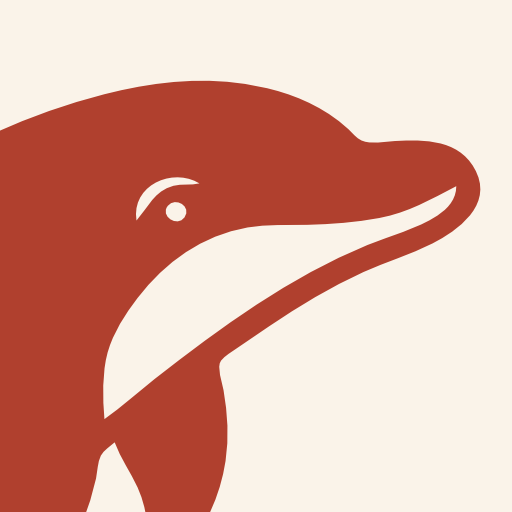

Your ledger, kept with meticulous care.
Track accounts and spending in any currency, budget by the month, and see what you actually owe on your loans and cards.

Delfin is a FastAPI backend and a vanilla-JavaScript front end. It imports your Financisto database, keeps every figure in the currency it happened in while converting for display at the rate of that day, and stores the lot in a SQLite file encrypted with SQLCipher. One Docker command and it is up; the only request it makes to the outside world is to the European Central Bank, for exchange rates.
Hold accounts in any currency the ECB publishes. Conversions use the rate from the day of the transaction, not today's.
SQLCipher with AES-256. The key lives only in memory, so a restart leaves the app locked — and the backups are encrypted too.
One multi-arch image, so Docker pulls the right one for your host. Housekeeping happens in a single nightly pass.
.backup or CSV, with a compatibility report before anything is writtenThe image is published to the GitHub Container Registry and rebuilt for arm64 and amd64 on every push. Docker pulls the right one for your host.
# Clone and start — the database persists in ./data $ git clone https://github.com/magonji/delfin.git $ cd delfin $ docker compose up -d
# Or run the published image directly $ docker run -d --name delfin --restart unless-stopped \ -e TZ=Europe/Madrid \ -p 8422:8422 \ -v "$(pwd)/data:/app/data" \ ghcr.io/magonji/delfin:latest
Go to http://<host>:8422/app/index.html and set a
password. Save the recovery code it shows you — there is no other way in.
Tools → Import Financisto, or map any bank CSV. You get a compatibility report first, so nothing is dropped without telling you.
Add it to your home screen. It is a PWA, so it behaves like an app on the phone and keeps working while the page reloads in the background.
Prefer to run it from source? Python 3.9+, pip install -r requirements.txt,
then uvicorn backend.main:app --port 8422. Full instructions in the
README.
A random 256-bit key encrypts the database. That key is stored wrapped twice — once behind your password, once behind your recovery code — so changing the password only re-wraps it. The database is never re-encrypted, and existing backups stay valid.